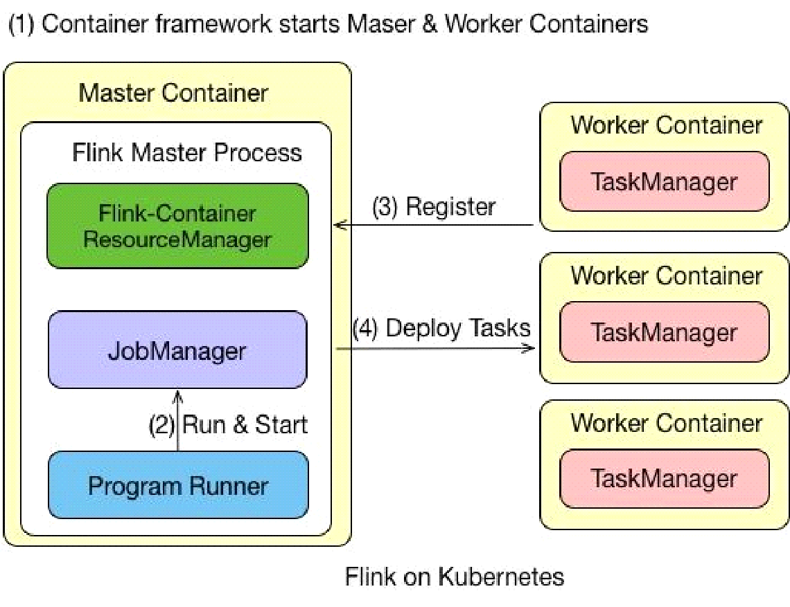

dolphinscheduler的调度任务有flink流任务，flinkx数据同步，默认仅支持flink on yarn,
本文记录了折腾flink on k8s的踩坑过程，主要难点是flink on k8s自身不支持pvc带来的各种妥协，
镜像的制作，hive的兼容。
部署环境
本来之前用的都是flink-1.10，但是1.10对k8s的支持还是beta的，(类似spark的２.4版本，到3.0才真正可用)。kerberos的支持，node-selector,application模式，secrets敏感数据的安全增强。
另外flinkx插件对k8s的支持也只支持flink-1.12，所以折腾了会就升级1.12了.
- flink版本：flink-1.12-scala-2.12
- k8s版本：1.15.3
工作流程
工作架构

支持applicationMode和sessionMode，我用的是applicationMode.
节点类型
jobmanager
- service：jobmanager的rpc服务
- deployment：控制pod的副本数
- pod:实际执行jobmanager逻辑
- ui-ingress：用户创建，路由到service
taskmanager
- pod: 根据slot和parallel动态启动多个
historyserver：独立部署
实现细节
制作docker镜像
因为flink native k8s不支持pvc，只能读取本地的资源文件，所以好多需要用到外部动态资源的都是根据环境变量，在entrypoint启动前完成：
- 设置hosts
- minio客户端下载flink启动jar
- 设置flinkx的classpath
- 设置hadoop classpath
附件：
flink-dockerfile
flink-entrypoint.sh
minio_client.py
1.12后续版本版本也支持podTemplate中以sidecar的形式实现上述操作。
这点spark做的好多了，flink这个基础的volume都不支持，太坑了
配置K8S环境
需要运维新增namespace和service account
JobManager的HA
K8s的HA实现原理：leader选举是间接通过etcd实现，恢复时状态数据从savepoint获取。
注意delete deploy的时候，
high-availability.storageDir数据不会删除,需要自己清理
flink-conf新增以下配置实现1
2
3
4
5
6high-availability: org.apache.flink.kubernetes.highavailability.KubernetesHaServicesFactory
#JobManager metadata is persisted in the file system high-availability.storageDir and only a pointer to this state is stored in Kubernetes.
# The storageDir stores all metadata needed to recover a JobManager failure.
high-availability.storageDir: s3:///flink/recovery
# In order to identify the Flink cluster, you have to specify a kubernetes.cluster-id.
kubernetes.cluster-id: cluster1337
查看flink日志
目前3种方式查看
- kubectl logs $clusterId
- flink web ui
- kibana(fluent-bit会将pod日志都采集到es)
1和2只能在任务运行时查看，任务结束后看不了。
部署history-server
以deployment形式部署1个flink-historyserver，然后用service路由，增加1个nodeport外部访问
访问web-ui
- 官方提供的port-forward方案，
kubectl -n spark port-forward podName 4000:4040，这种比较原始，每个flink run都需要启动一个代理服务，适合测试，不适合生产环境 - 生产环境应类似部署独立的ingress提供外部访问,每个flink应用会自动创建一个service，如
FLINK_DEMOx-kafka-hive-parquet-rest手动为每个flink应用创建一个ingress,
然后用ingress controller访问：地址：http://ip:port/apps/FLINK_DEMOx-kafka-hive-parquet/#/overview
1 | apiVersion: extensions/v1beta1 |
这儿比spark做的好，spark还得自己部署个service才行
文件系统
目标：支持同时读取hdfs和minio
结论：flink是不强依赖hadoop版本的,HADOOP_CLASSPATH指定hadoop classpath就一定working，建议自己写测试程序验证，实在不行再编译源码。
flink-s3-fs-hadoop如何兼容hadoop-2.6
flink-1.12.2版本的flink-s3-fs-hadoop插件，依赖hadoop-３.1.0。
如果直接换成hadoop-2.6.0，会导致HadoopS3AccessHelper编译不通过，
下面3个依赖只在hadoop-aws-3.1.0版本中存在。1
2
3import org.apache.hadoop.fs.s3a.S3AUtils;
import org.apache.hadoop.fs.s3a.WriteOperationHelper;
import com.amazonaws.SdkBaseException;
是需要自己编译flink-s3-fs-hadoop？
还是有其他的兼容性方案，使得flink兼容hadoop-2.6.0
改为2.７.5测试
java.lang.NoSuchMethodError: org.apache.hadoop.tracing.TraceUtils.wrapHadoopConf(Ljava/lang/String;Lorg/apache/hadoop/conf/Configuration;)Lorg/apache/htrace/HTraceConfiguration;
改为3.1.0测试，无法识别s3.endpoint配置，发现坑爹玩意儿不读flink-conf.yaml，读取的是core-site.xml中的配置HADOOP_CONF_DIR和FLINK_DIR_CONF因为没有加入classpath都没用，只能识别test/resources根目录下的core-site.xml
s3a官方wordcount示例
./bin/start-cluster.
./bin/flink run examples/batch/WordCount.jar -input s3://FLINKDEMO/FLINK/core-site.xml -output s3://FLINKDEMO/__FLINK/worcount.txt
一切正常…
那说明
flink-1.12.2编译
flink-filesystems项目的pom添加repository1
2
3
4
5
6
7<repositories>
true<repository>
truetrue<id>cloudera</id>
truetrue<name>cloudera repo</name>
truetrue<url>https://repository.cloudera.com/artifactory/cloudera-repos/</url>
true</repository>
</repositories>1
2
3
4
5
6
7
8
9mvn clean install \
-Dfast \
-Dskip.npm \
-DskipTests \
-Drat.skip=true \
-Dscala-2.12 \
-Pinclude-hadoop \
-Dhadoop.version=2.6.5 \
-Phive-1.1.0
flink-shaded-hadoop编译
1 | mvn clean package \ |
自己打包的hadoop是能够读写hdfs了，但是s3a文件系统必须要hadoop-3.1.0，这边好了，那边又翘起来了（－－）
flink-s3-fs-hadoop
hive和hdfs适配好了，然后s3那边又挂了…,hadoop-aws对hadoop的版本超级敏感，一个版本变化都肯呢个会导致起不来
flink filesystem的revert classloader
Flink按官方文档是采用SPI机制，自定义revert classloader的方式来动态加载filesystem，(org.apache.flink.core.plugin.PluginLoader)，按理不会和flink Classloader的类冲突。
flink程序读取一个s3a://的文件，本地debug时没有FileSystem走的
initializeWithoutPlugins，所以报错找不到s3a的文件系统，然后我小机灵就pom引入了flink-s3-fs-hadoop，然后就和user code中的class冲突了，hadoop版本不匹配，
根本原因是这个插件的inverse class loader机制没生效。所以手动初始化一下filesystem的插件机制1
FileSystem.initialize(flinkConfig, PluginUtils.createPluginManagerFromRootFolder(flinkConfig));
PluginLoader的核心代码
1 |
|
用户程序加载
flink1.12不能使用pvc挂载目录到容器内，userCode只能提前打包在image中，这在生产上基本不能使用。因为数据加工时，用户的代码总是自定义的jar包的形式出现。
另外打包方式可以采用shaded-plugin，将依赖都打成1个fatJar，flink的依赖改为provided。classloader.resolve-order:child-first模式加载就行，避免userCode和flink代码冲突
flink-1.12可在entrypoint中通过s3a的python sdk，从minio下载用户指定的userCode.jar，然后启动脚本用local://userCode.jar
flink-1.13可以定义podTemplate，initContainer下载远程userCode到local
相关配置参数：
pipeline.jars,pipeline.classpath
kerberos认证
Kerberos authentication for various components - Hadoop, ZooKeeper, and connectors
flink的kerberos配置1
2
3
4security.kerberos.login.contexts
security.kerberos.login.keytab
security.kerberos.login.principal
security.kerberos.login.use-ticket-cache
我是自己从远程下载当前用户的keytab然后在程序内认证的，不是走kinit的形式。
默认读取/etc/krb5.conf而不是自定义的krb5.conf
1
2
3
4
5public static synchronized void reloadKrb5conf(String krb5confPath) {
System.setProperty("java.security.krb5.conf", krb5confPath);
Config.refresh();
KerberosName.resetDefaultRealm();
}kerberos使用keytab认证后，返回的用户是当前linux的系统用户（simple认证）
1
2
3
4
5
6
7Configuration securityConf = new Configuration();
securityConf.set(FileSystemUtil.KEY_HADOOP_SECURITY_AUTHORIZATION, "true");
securityConf.set(FileSystemUtil.KEY_HADOOP_SECURITY_AUTHENTICATION, KRB_STR);
//强制刷新config会重新初始化UserGroupInformation的conf
UserGroupInformation.setConfiguration(securityConf);
LOG.trace("login user:{} with keytab:{}", principal, keytab);
return UserGroupInformation.loginUserFromKeytabAndReturnUGI(principal, keytab);
hive版本兼容
由于社区大多数用户都是hive作为数仓，所以flink和spark一样，都内置兼容hive的各个版本。
但注意flink的hive版本和自己的hiveServer的版本必须严格一致，用高版本的jdbc连接低版本的hiveserver是会报错的
引入flink-sql-connector-hive包即可，但是注意如果服务端是cdh的，官方的包可能报错，还是需要自己引入cdh对应的hive包
hosts配置
flink run-application中新增环境变量HOSTS_FILE,
docker镜像的entrypoint中读取变量并并追加到/etc/hosts
示例
flink不同集群环境的测试脚本
测试WordCount
/opt/flink/bin/flink run-application \
—target kubernetes-application \
-Dkubernetes.cluster-id=”flink-demo1” \
-Dkubernetes.container.image=”harbor.dc.xxx-it.com/x-bigdata/flink:0.1” \
-Dkubernetes.container.image.pull-policy=Always \
-Dkubernetes.namespace=dboard \
-Dkubernetes.service-account=dboard \
-Dkubernetes.jobmanager.cpu=1 \
-Dkubernetes.taskmanager.cpu=1 \
-Djobmanager.memory.flink.size=1gb \
-Dtaskmanager.memory.process.size=1gb \
-Dtaskmanager.numberOfTaskSlots=1 \
local:///opt/flink/examples/batch/WordCount.jar
flink on k8sApplication
1 |
|
囧，没注意区分
flink run和flink run-application导致的Caused by: java.lang.IllegalStateException: No ExecutorFactory found to execute the application.查了一下午.
run用的是DefaultExecutorServiceLoader, run-application用的是DefaultClusterClientServiceLoader，—target要与之对应
flink command
./bin/flink list —target kubernetes-application -Dkubernetes.cluster-id=flink-demo1
./bin/flink cancel —target kubernetes-application -Dkubernetes.cluster-id=flink-demo1 $jobId